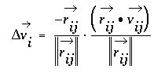
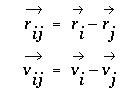
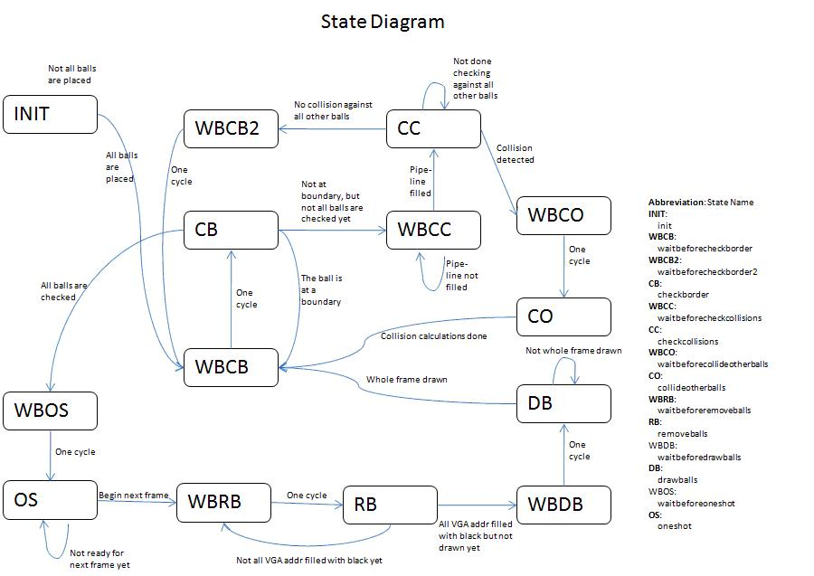
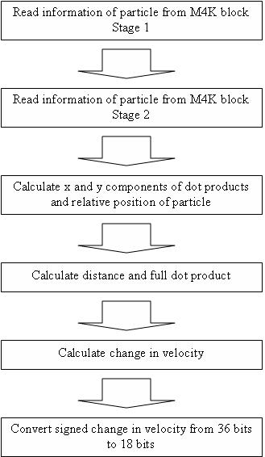
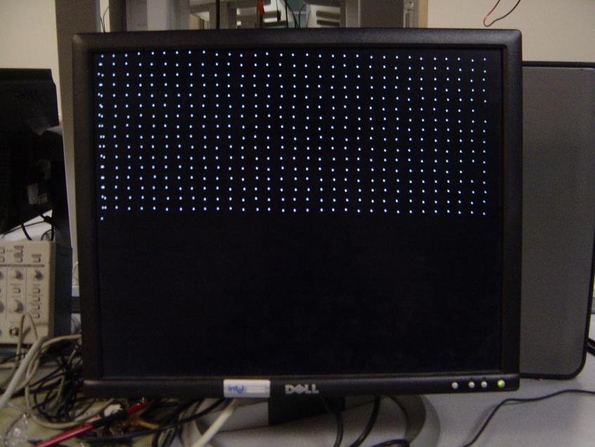
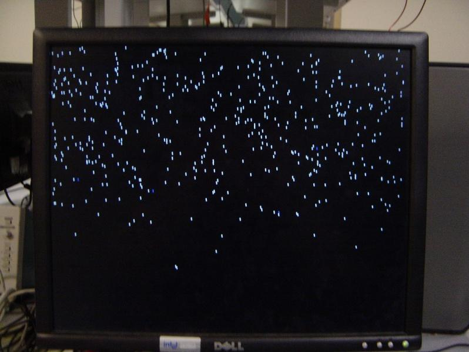
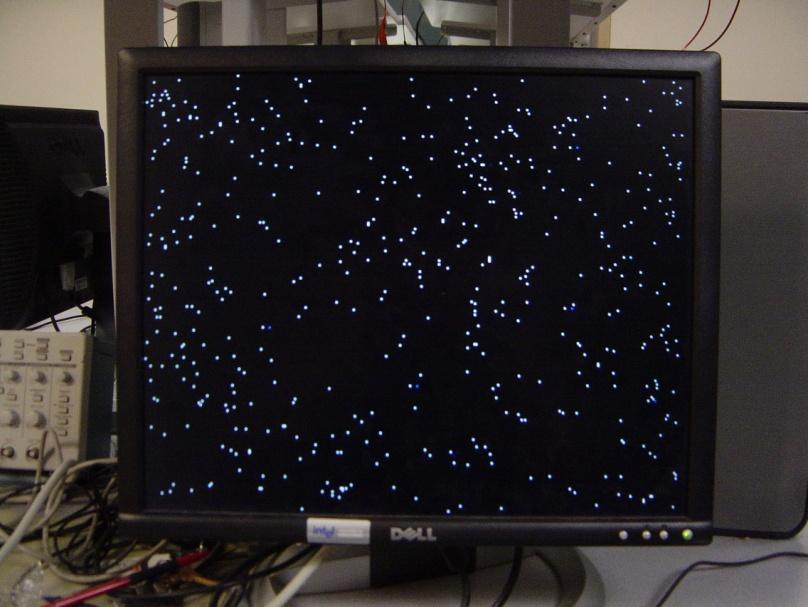

Introduction | High Level Design | Program/Hardware Design | Results | Conclusions | Project Files | References | Pictures
Our project was simulating an ideal gas on a VGA monitor. The idea is to have the monitor display moving white pixels that represent particles in an ideal gas and perform the proper calculations when they collide with each other or with the edge of the screen. To achieve this goal, we built a state machine on the DE2 development board that keeps track of the particle coordinates and velocities in m4k blocks, and updated each particles coordinates and redrew them on the screen once per frame. Since an ideal gas is generally considered a large mass of free moving particles, a fluid simulation based on an ideal gas should have a large density of simulated particles. This proves to be a difficult but attractive challenge that we determined would be a rewarding experience to pursue. Also, the resulting visual phenomenon from such a simulation is interesting to study and can provide an educational insight into the general fluid dynamics of an ideal gas.
Before providing details about our design, we will present a brief outline on the key properties of an ideal gas. The first property relies on the law of conservation of momentum, which states that the total net momentum in a closed system must remain constant unless imposed upon by a source outside the system. In an ideal gas, we can assume that all particles have the same mass, which means that sum of all particle velocities in a closed gaseous system will remain a constant. This also means that in any given collision between two particles, the net velocity of the two particles must be the same before and after the collision. There are two types of collisions: elastic, and inelastic. In an elastic collision, all energy in the system is conserved as momentum. In an inelastic collision, some of this energy may be dissipated as heat, which results in less energy in the momentum and an overall decrease in the average magnitude of velocity. Collisions in a gas can be considered to be approximately elastic, which simplifies the math involved. The change in velocity between two particles, (assumed to be spherical balls), in an elastic collision between can be calculated from the projection of the relative velocities onto the normal of the collision site:
 
The vector vi is the change in the velocity vector of ball i, rij is the relative position vector between balls i and j, and vij is the relative velocity vector between balls i and j. Intuitively, it makes sense for the collision to be a projection along the normal of the collision site because the net force on each ball would be along that normal.
For our design, we weighed the advantages and disadvantages of developing a hardware solution versus a software solution. Due to having to keep track of all the particles (or balls) in memory, the software solution sounded attractive because we would not have to worry about the memory overhead. However, in order to find the collisions, the coordinates of all balls have to be compared with the coordinates all other balls. To keep track of just 500 balls, we have to make (500*501/2 comparisons) * (60 frames per second) = 7,515,000 comparisons per second. Since every instruction in a software solution uses at least one clock cycle, a single comparison may take a few clock cycles, which means the number of instructions required per second will increase to a lot more than 7 million. In hardware, we can use a state machine that performs multiple tasks at the same time, which saves a lot of clock cycles. Another advantage of hardware is the ability to pipeline tasks that take multiple clock cycles. Overall, the hardware solution allows for many more tasks to be completed within one clock cycle than the software solution. Therefore, our entire design is written in verilog.
Our main design is a statemachine that is controlled by the vga control clk (VGA_CTRL_CLK):

The four main states are checkboundaries, checkcollisions, collideotherball, removeballs, and drawballs. The removeballs and drawballs states are the most straightforward. The removeballs state clears the SRAM and transitions to the drawballs state, which loops through all the m4k block addresses and draws each ball to its new location in SRAM. There is a oneshot state that waits until the VGA is not being used before transitioning to the removeballs state. The checkboundaries state checks whether each ball has reached the edge of the screen and changes the ball’s position and velocity accordingly. If the ball is not at a boundary, the statemachine transitions to the checkcollisions state, which is the most interesting state. For each ball, the checkcollisions state loops through all the other ball coordinates and if it finds a collision, it updates the current ball’s position and velocity accordingly and transitions to the collideotherball state, which updates the update’s the other ball’s position accordingly. The checkcollisions and collideotherball states utilize a helper module called collisioncalculator, which performs a pipelined version of the projection equation given earlier.
The entire project consists of the state machine, the collision calculator, and the m4kblocks. As stated before, our main goal is to simulate as many particles as we can. In order to do this, we had to tweak the different components so that as much as possible can be completed in a given number of clock cycles. One major strategy for freeing up clock cycles is to perform pipelining. Due to the enormous number of comparisons, the checkcollsions state was our focus for the pipelining. There were two major areas that were pipelined. The first area is the m4kblocks. Since reading and writing take 2 clock cycles each, we can make a two stage pipeline for reading and writing. The other major area is the collisioncalculator module. Due to the complexity of the projection calculation within the module, the propagation time for performing the calculation all at once limited our ability to increase the clock frequency. Changing the calculation into a four stage pipeline solved this problem enabling us to double the clock frequency from 25.2MHZ to 50.4MHZ. The four stage pipeline and the two stage pipeline were combined together within the checkcollisions state as a 6 stage pipeline. Unfortunately, we did not gain as many clock cycles as expected. Raising the frequency to any multiple of the vga control clock higher than 50.4MHZ results in a timing analysis failure.

Another area for optimization was within the collision calculation itself, which involves division by the magnitude squared of the relative position vector. In general, division is a resource intensive calculation but in our case, we can estimate the relative position vector. If we assume all balls have the same radius, then when they collide, they will always be approximately the same distance apart, which means that if we choose the radius to be a power of 2, we can divide by just performing a binary shift. The reason for them being approximately the same distance apart is because a collision is detected by checking if the distance between two particles is below a threshold. Unfortunately, this approximation turned out to be too crude to provide a decent simulation. If the particles are moving extremely fast relative to their radius, then the approximation becomes extremely inaccurate due to the distance in a collision being well below the specified threshold. On the other hand, our approximation of the square root for the distance calculation worked relatively well. The approximation of the sqrt(x^2 + y^2) where x > y is (x + ½*y) and comes from the Taylor series expansion.
Another interesting challenge was to ensure that all collisions were actually detected. In order to do this, we could not allow any particle to move at a speed that is grater than its own radius per frame. Two particles on a collision course each traveling fasdter than 1 radius per frame may end up never falling below the collision threshold in any frame. Since our particles have a diameter of one pixel, they must move at fractions of a pixel per frame, which means the position and velocity representations within the m4k blocks have to have a fixed point representation that is more precise than the screen pixel coordinates. Along with this, we also want to be able to easily perform mathematics on the position and velocity representations. Therefore, we decided to have the x-position, y-position, x-velocity, and y-velocity of each ball to be represented by an 18 bit signed 10.8 fixed point number. This means we have one sign bit, 9 whole number bits, and 8 fractional bits. The 8 fractional bits means that a speed of half a pixel per second would be 2^7 = 128, which means there are 128 different speeds for each ball.
This project has been assessed according to accuracy, speed, and how well we met our goals. Unfortunately, our accuracy is much lower than expected due to the inaccuracy in the distance approximation in collisions. This inaccuracy caused the particles to lose energy over time due to dividing by a distance that is too big. The end result is that the elastic collisions ended up not really being elastic. It also causes particles to sometimes get “stuck” and clump together due to never being able to escape to a distance beyond the collision threshold. However, there are many methods for improving the accuracy and clumping including implementing a hardware divider or shifting the dot product by different amounts according what range the distance was in. We avoided the divider because of the complexity and timing factors involves but we did try the latter solution and, though still inaccurate, it resulted in a significant improvement. There is also a mysterious bug with particles on the top half of the screen being darker than particles on the bottom half. If we lowered the number of particles to a very small number (like 30), the ones on the top half of the screen would not show up at all. We believe this may be because clearing the old ball locations by clearing the entire screen does not fit within the small percentage of time when the VGA controller is not drawing. Overall, the visual result still has an educational value. We can change the speeds and locations of the particles and see how they interact on the screen. This is a simple change inside two different mif files for the velocity and the position. A small matlab program for generating random ball locations for pasting into the mif files is attatched here.
Overall, the project is functional. It can simulate over 500 balls on the screen and they bounce off each other properly in most cases. However, the resulting simulation was not as accurate as we had hoped and we expected to simulate over 1000 balls. Having said that, if we were to do this project over again we would focus more on parallelization instead of serializing the process at a high frequency. We initially avoided this approach because of the complexity of communication between the parallelized components. We also thought that we would be able to use a higher clock frequency than just 50.4MHZ. Visually however, the project turned out to be an interesting simulation to explore.


